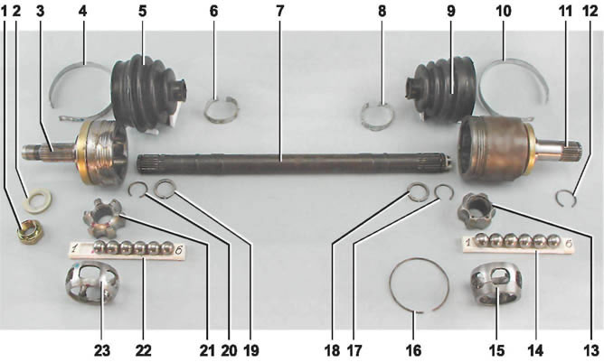

Приводы передних колесОсновные данные для контроля, регулировки и обслуживания
Моменты затяжки резьбовых соединений
ОПИСАНИЕ КОНСТРУКЦИИ Приводы передних колес передают крутящий момент от коробки передач к передним ведущим колесам независимо от угла поворота колес и положения подвески. Каждый привод состоит из двух шарниров равных угловых скоростей (ШРУСов) и вала, соединяющего шарниры. Короткий вал левого привода изготовлен из стального прутка, длинный вал правого привода — из стальной трубы. При помощи шлицевого соединения хвостовик корпуса внутреннего шарнира соединен с полуосевой шестерней дифференциала. Шарнир передает крутящий момент на вал привода независимо от угла между корпусом шарнира и валом. Внутренний шарнир устроен так, что он не только передает крутящий момент под различными углами, но и допускает взаимное осевое перемещение корпуса шарнира и вала привода подвески во время движения. Наружный шарнир передает крутящий момент от вала привода к ступице ведущего колеса, с которой он соединен при помощи шлицевого соединения. Шлицевой конец корпуса наружного шарнира крепится к ступице при помощи гайки. Шарниры защищены от попадания в них грязи и влаги защитными резиновыми чехлами, закрепленными при помощи стальных ленточных хомутов. Детали левого привода: 1 — гайка ступицы; 2 — упорная шайба гайки; 3 — корпус наружного шарнира; 4 большой хомут чехла наружного шарнира; 5 - защитный чехол наружного шарнира; 6 — малый хомут чехла наружного шарнира; 7 — вал привода; 8 - малый хомут чехла внутреннего шарнира; 9 защитный чехол внутреннего шарнира; 10 — большой хомут чехла внутреннего шарнира; 11 — корпус внутреннего шарнира; 12 — стопорное кольцо хвостовика внутреннего шарнира; 13 — внутренняя обойма внутреннего шарнира; 14 — шарики внутреннего шарнира; 15 — сепаратор внутреннего шарнира; 16 — фиксатор внутреннего шарнира; 17 - стопорное кольцо обоймы внутреннего шарнира; 18 - упорное кольцо обоймы внутреннего шарнира; 19 — упорное кольцо обоймы наружного шарнира; 20 - стопорное кольцо обоймы наружного шарнира; 21 — внутренняя обойма наружного шарнира; 22 — шарики наружного шарнира; 23 — сепаратор наружного шарнира Примечание. Вал правого привода длиннее и изготовлен из трубы. В руководстве описываются операции по снятию, ремонту и установке левого привода. Все работы на правом приводе выполняются аналогично. |
||||||||||||||||||